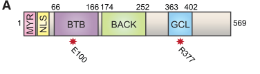

Germ cell-less (GCL) is a maternally provided BTB/POZ-domain protein that functions as a substrate-specific adaptor in the Cullin3-RING E3 ubiquitin ligase complex (CRL3-GCL). Its primary identified substrate is the receptor tyrosine kinase Torso, which GCL targets for polyubiquitination and proteasomal degradation at the posterior pole of the early embryo. By eliminating Torso signaling in the nascent primordial germ cells, GCL enables pole cell fate specification and establishment of transcriptional quiescence in the germline. GCL localizes to the nuclear envelope during interphase and translocates to the plasma membrane during mitosis upon nuclear envelope breakdown, providing cell-cycle-dependent spatiotemporal control of its E3 ligase activity. The mammalian homolog GMCL1 is associated with male fertility disorders.
| GO Term | Evidence | Action | Reason |
|---|---|---|---|
|
GO:0005737
cytoplasm
|
IEA
GO_REF:0000044 |
ACCEPT |
Summary: Accept. GCL protein is a component of the pole plasm (a specialized cytoplasm) at the posterior pole of the embryo. UniProt annotates GCL to "Cytoplasm. Note=Pole plasm." This is consistent with the known biology of GCL as a germ plasm component [PMID:1380406, PMID:7958883].
Supporting Evidence:
PMID:7958883
gcl protein associates specifically with the nuclear pores of the pole cell nuclei
file:DROME/gcl/gcl-deep-research-falcon.md
**gcl** is one of the maternally provided determinants essential for this germline establishment step.
|
|
GO:0007281
germ cell development
|
IEA
GO_REF:0000002 |
KEEP AS NON CORE |
Summary: Accept but as non-core. GCL is required for germ cell specification (pole cell formation), which is the very first step of germ cell development. However, the more specific terms pole cell formation (GO:0007279) and pole cell fate determination (GO:0007278) are more informative for GCL's actual role. The IEA annotation via InterPro (IPR043380, Germ cell-less protein-like) is correct in assigning this broad term. Note there is also an IGI annotation below with direct experimental evidence.
Supporting Evidence:
file:DROME/gcl/gcl-deep-research-bioreason-sft.md
pole cell fate determination (GO:0007280) and contributes to germ cell development (GO:0007281)
file:DROME/gcl/gcl-deep-research-falcon.md
Gcl is required for pole cell formation but not germplasm assembly
|
|
GO:1990756
ubiquitin-like ligase-substrate adaptor activity
|
IDA
PMID:28743001 GCL and CUL3 Control the Switch between Cell Lineages by Med... |
ACCEPT |
Summary: Accept as CORE FUNCTION. This is the primary molecular function of GCL. Pae et al. (2017) demonstrated that GCL is a substrate-specific adaptor for the CUL3-RING ubiquitin ligase complex (CRL3-GCL). GCL binds CUL3 through the conserved phi-x-E motif in its BTB domain, and mutation of this motif (E100K) abolishes the interaction and PGC formation. The GCL domain provides substrate recognition for Torso RTK. IDA evidence from co-immunoprecipitation, ubiquitination assays, and in vivo degradation assays.
Supporting Evidence:
PMID:28743001
GCL, a conserved BTB (Broad-complex, Tramtrack, and Bric-a-brac) protein, is a substrate-specific adaptor for Cullin3-RING ubiquitin ligase complex (CRL3GCL)
file:DROME/gcl/gcl-deep-research-falcon.md
GCL is a substrate-specific adaptor for a Cullin-3 RING E3 ubiquitin ligase complex
|
|
GO:0007281
germ cell development
|
IGI
PMID:28743001 GCL and CUL3 Control the Switch between Cell Lineages by Med... |
KEEP AS NON CORE |
Summary: Accept as non-core. The IGI evidence is based on genetic interactions between gcl and cul3 (and torso pathway components) demonstrating that CRL3-GCL promotes germ cell development by degrading Torso. Dosage-dependent genetic interactions between gcl and cul3 LOF alleles showed reduced PGC numbers. The more specific terms pole cell formation and fate determination better capture GCL's role.
Supporting Evidence:
PMID:28743001
Introduction of a single cul3 loss-of-function (LOF) allele into a gcl heterozygous background (gclΔ/+, cul3LOF/+) led to a significant reduction in PGCs compared to each heterozygous control
file:DROME/gcl/gcl-deep-research-falcon.md
reducing Torso pathway activity restores PGC formation in gcl mutants
|
|
GO:0043161
proteasome-mediated ubiquitin-dependent protein catabolic process
|
IDA
PMID:28743001 GCL and CUL3 Control the Switch between Cell Lineages by Med... |
ACCEPT |
Summary: Accept as core. GCL as part of CRL3-GCL mediates polyubiquitination and subsequent proteasomal degradation of the Torso RTK. This was demonstrated by in vivo degradation of Torso upon GCL overexpression (blocked by MLN4924, a Cullin-RING ligase inhibitor), and by ubiquitination ladders in denaturing immunoprecipitation assays.
Supporting Evidence:
PMID:28743001
CRL3GCL targets Torso for poly-ubiquitylation and degradation
file:DROME/gcl/gcl-deep-research-falcon.md
this effect is blocked by Cullin-RING ligase inhibition (MLN4924), supporting a CUL3-dependent ubiquitylation mechanism
|
|
GO:0120177
negative regulation of torso signaling pathway
|
IMP
PMID:28743001 GCL and CUL3 Control the Switch between Cell Lineages by Med... |
ACCEPT |
Summary: Accept as CORE FUNCTION. This is the central biological role of GCL: negatively regulating Torso signaling by mediating degradation of the Torso receptor at the posterior pole. Loss of gcl leads to persistent Torso expression and signaling in PGCs. Mutations in the torso pathway (tsl LOF) completely rescue the gcl null PGC formation defect, directly demonstrating that GCL's major function is to inhibit Torso signaling.
Supporting Evidence:
PMID:28743001
introducing tsl mutations completely restored PGC formation and division in gclΔ/Δ embryos
file:DROME/gcl/gcl-deep-research-falcon.md
GCL binds Torso, induces Torso polyubiquitylation, and reduces Torso protein abundance; this effect is blocked by Cullin-RING ligase inhibition (MLN4924)
|
|
GO:0000209
protein polyubiquitination
|
IDA
PMID:28743001 GCL and CUL3 Control the Switch between Cell Lineages by Med... |
ACCEPT |
Summary: Accept as core. GCL induces polyubiquitination of Torso, demonstrated by high-molecular-weight ubiquitin ladders on Torso immunoprecipitates under denaturing conditions. This activity requires the CUL3 interaction (abolished by E100K mutation) and is blocked by MLN4924.
Supporting Evidence:
PMID:28743001
GCL induced a ladder of several high molecular-weight bands that correspond to ubiquitylated forms of Torso
file:DROME/gcl/gcl-deep-research-falcon.md
GCL induces Torso ubiquitylation and lowers Torso protein levels
|
|
GO:0007278
pole cell fate determination
|
IGI
PMID:28743001 GCL and CUL3 Control the Switch between Cell Lineages by Med... |
ACCEPT |
Summary: Accept as CORE FUNCTION. The IGI evidence is from genetic interactions with torso pathway genes (tor, tsl) and cul3. GCL determines pole cell fate by preventing somatic fate acquisition through degradation of Torso. The gcl/tsl double mutant rescue demonstrates that GCL acts upstream of Torso to allow germline fate.
Supporting Evidence:
PMID:28743001
We show that CRL3GCL promotes PGC fate by mediating degradation of Torso, a receptor tyrosine kinase (RTK) and major determinant of somatic cell fate
file:DROME/gcl/gcl-deep-research-falcon.md
GCL binds **CUL3** via its BTB/POZ interface and binds the receptor tyrosine kinase (**RTK**) **Torso** as a substrate, promoting **Torso ubiquitylation and degradation** at the posterior pole to prevent inappropriate somatic signaling in the nascent germline region
|
|
GO:0031463
Cul3-RING ubiquitin ligase complex
|
IPI
PMID:28743001 GCL and CUL3 Control the Switch between Cell Lineages by Med... |
ACCEPT |
Summary: Accept as CORE. GCL physically interacts with CUL3 through its BTB domain to form the CRL3-GCL complex. Co-immunoprecipitation demonstrated this interaction in both oocyte lysates and Drosophila S2 cells. The BTB phi-x-E motif mediates the CUL3 interaction.
Supporting Evidence:
PMID:28743001
transgenically expressed CUL3 co-immunoprecipitated with endogenous GCL in oocyte lysate extracts
file:DROME/gcl/gcl-deep-research-falcon.md
CUL3 co-immunoprecipitates with GCL, and mutations disrupting the canonical BTB–CUL3 interaction motif impair this interaction
|
|
GO:0005938
cell cortex
|
IDA
PMID:19393317 Bruno negatively regulates germ cell-less expression in a BR... |
ACCEPT |
Summary: Accept. GCL is detected at the cell cortex. This is consistent with GCL's translocation to the plasma membrane during mitosis, where it interacts with and degrades the Torso RTK. GCL co-localizes with submembranous F-actin during mitosis.
Supporting Evidence:
PMID:28743001
However, following nuclear envelope breakdown during mitosis, we found that GCL localized closer to submembranous F-actin
file:DROME/gcl/gcl-deep-research-falcon.md
after mitotic NE breakdown it moves near submembranous F-actin and co-localizes with Torso at the plasma membrane
|
|
GO:0034399
nuclear periphery
|
IDA
PMID:19393317 Bruno negatively regulates germ cell-less expression in a BR... |
ACCEPT |
Summary: Accept. GCL localizes to the nuclear periphery (nucleoplasmic face of the nuclear envelope) during interphase. This localization serves as a sequestration mechanism to prevent inappropriate CRL3-GCL activity when it is not needed. This is consistent with the original observation of nuclear pore association and later refined localization studies.
Supporting Evidence:
PMID:7958883
gcl protein associates specifically with the nuclear pores of the pole cell nuclei
PMID:28743001
We observed the GCLWT transgene at the nuclear membrane during interphase in blastoderm embryos
file:DROME/gcl/gcl-deep-research-falcon.md
GCL is **nuclear-envelope localized during interphase**, consistent with sequestration and/or nuclear-peripheral functions
|
|
GO:0005643
nuclear pore
|
IDA
PMID:7958883 Germ cell-less encodes a cell type-specific nuclear pore-ass... |
ACCEPT |
Summary: Accept but note that later studies refined the localization. Jongens et al. (1994) reported that GCL associates specifically with nuclear pores of pole cell nuclei by immunoEM. Subsequent work (Robertson et al. 1999, Pae et al. 2017) showed GCL localizes more broadly to the nucleoplasmic face of the nuclear envelope, but the original nuclear pore association is well supported by the direct experimental evidence in this paper.
Supporting Evidence:
PMID:7958883
gcl protein associates specifically with the nuclear pores of the pole cell nuclei
file:DROME/gcl/gcl-deep-research-falcon.md
Interphase:** GCL is sequestered at the **nuclear envelope**.
|
|
GO:0007278
pole cell fate determination
|
IDA
PMID:7958883 Germ cell-less encodes a cell type-specific nuclear pore-ass... |
ACCEPT |
Summary: Accept as CORE FUNCTION. Jongens et al. (1994) demonstrated that GCL is required for pole cell specification. Mothers with reduced gcl levels produce progeny lacking pole cells. Overexpression causes a transient increase in pole cells. Ectopic anterior localization of gcl causes nuclei there to adopt pole cell fate. This is direct evidence (IDA) for pole cell fate determination.
Supporting Evidence:
PMID:7958883
Ectopic localization of gcl to the anterior pole of the embryo causes nuclei at that location to adopt characteristics of pole cell nuclei
file:DROME/gcl/gcl-deep-research-falcon.md
Maternal loss of **gcl** disrupts or abolishes pole cell formation; gcl is required for the establishment, not assembly, of the germline
|
|
GO:0007279
pole cell formation
|
TAS
PMID:12655640 Transcriptional silencing and translational control: key fea... |
ACCEPT |
Summary: Accept as CORE. The review by Leatherman & Jongens (2003) discusses GCL as a germ plasm component necessary for proper formation of pole cells, establishing transcriptional quiescence as a key feature of pole cell formation. This TAS annotation is well supported by the primary literature.
Supporting Evidence:
PMID:12655640
a period of transcriptional quiescence in the early germ cell precursors
file:DROME/gcl/gcl-deep-research-falcon.md
gcl is required for the establishment, not assembly, of the germline
|
|
GO:0007279
pole cell formation
|
TAS
PMID:8970731 Germ cell development in Drosophila. |
ACCEPT |
Summary: Accept. This review by Williamson & Lehmann (1996) covers germ cell development in Drosophila and discusses gcl as a key component required for pole cell formation. TAS evidence is appropriate for a review article.
Supporting Evidence:
PMID:8970731
In this review, we address various aspects of germ cell development in Drosophila, such as germ cell determination, germ cell migration, gonad formation, sex determination, and gametogenesis
file:DROME/gcl/gcl-deep-research-falcon.md
**gcl** is one of the maternally provided determinants essential for this germline establishment step
|
|
GO:0016480
negative regulation of transcription by RNA polymerase III
|
IMP
PMID:12361572 germ cell-less acts to repress transcription during the esta... |
UNDECIDED |
Summary: Undecided. The full text of PMID:12361572 is not available (full_text_available: false), and RNA polymerase III specificity cannot be confirmed from the accessible abstract. The abstract describes transcriptional quiescence in general terms, and all available evidence uses RNA polymerase II markers: the named ectopic repression targets (sisA, sisB, tll, hkb) are Pol II-transcribed zygotic genes, and the quiescence readout in both the falcon report and PMID:28743001 is RNAPII phospho-Ser2 (H5) staining, a Pol II assay. No tRNA, 5S rRNA, or other Pol III-specific synthesis assay is cited in any available source. Per curation guidelines, UNDECIDED is used because the Pol III specificity asserted by this annotation cannot be verified from accessible publications. The co-existing GO:0045892 (negative regulation of DNA-templated transcription, TAS PMID:12655640) captures the documented transcriptional repression biology at the correct level of generality.
Supporting Evidence:
PMID:12361572
GCL can repress transcription of at least a subset of genes in an ectopic context, independent of other germ plasm components
file:DROME/gcl/gcl-deep-research-falcon.md
GCL also promotes **transcriptional quiescence** in pole-bud nuclei and can repress a subset of zygotic genes when ectopically localized
|
|
GO:0045892
negative regulation of DNA-templated transcription
|
TAS
PMID:12655640 Transcriptional silencing and translational control: key fea... |
ACCEPT |
Summary: Accept. The review discusses GCL's role in establishing transcriptional quiescence during germline development, which involves broad transcriptional silencing. Later mechanistic studies showed this is achieved through Torso degradation, but the transcriptional repression phenotype is the downstream biological consequence of GCL activity in the germline.
Supporting Evidence:
PMID:12655640
a period of transcriptional quiescence in the early germ cell precursors
PMID:12361572
Germ cell-less (GCL), a germ plasm component necessary for the proper formation of
file:DROME/gcl/gcl-deep-research-falcon.md
gcl mutants lose pole-bud nuclear transcriptional silencing as measured by RNAPII phospho-Ser2 (H5) staining and derepression of genes normally excluded from pole buds (e.g., sisA/sisB)
|
Q: A 2025 preprint (Saiduddin et al., bioRxiv) reports that by suppressing Torso, GCL establishes a PIP3-low posterior membrane domain that enables Myosin II recruitment and pole bud constriction, with torso/shc/sos/ras (but not canonical MEK/MAPK) knockdown restoring PGC formation in gcl mutants. Is there an appropriate GO term for localized phosphoinositide (PIP3) depletion or membrane lipid patterning downstream of RTK degradation, and should GCL be annotated to such a process once the preprint is peer-reviewed?
Q: The GO:0016480 (negative regulation of transcription by RNA polymerase III) annotation (IMP, PMID:12361572) asserts Pol III specificity, but all accessible evidence (the PMID:12361572 abstract, PMID:28743001, and the falcon report) uses RNA polymerase II readouts (RNAPII pSer2/H5 staining; Pol II-transcribed targets sisA, sisB, tll, hkb). Is there direct experimental evidence (e.g. tRNA or 5S rRNA synthesis assays) that GCL specifically represses RNA polymerase III transcription, or should this annotation be replaced by the general DNA-templated term (GO:0045892)?
The architecture begins with IPR043380 (Germ cell-less protein-like family, residues 1–497) spanning the full length, indicating a lineage-specific adaptor dedicated to germline specification. Embedded within the N-terminal third is a cluster of BTB/POZ signatures: IPR011333 (SKP1/BTB/POZ domain superfamily, residues 37–195) and its refined spans IPR011333 at residues 51–164, together with the core IPR000210 (BTB/POZ domain, residues 57–164, 66–136, 66–166). This arrangement defines a canonical BTB/POZ fold that dimerizes and creates a docking surface for Cullin-3. The BTB module causes high-affinity binding to CUL3 and positions the protein as a substrate-recognition subunit within a CUL3–RBX1 RING E3 ligase. The family-level envelope (IPR043380) implies additional, family-specific regions outside the BTB core that provide substrate-binding determinants and subcellular targeting cues.
From this domain logic, the molecular function resolves to ubiquitin ligase-substrate adaptor activity (GO:1990756): the BTB/POZ domain binds CUL3, while other regions capture specific targets, thereby determining which proteins are polyubiquitinated. The direct outcome of this adaptor action is protein polyubiquitination (GO:0000209) and subsequent proteasome-mediated ubiquitin-dependent protein catabolic process (GO:0043161). In the germline context, selective degradation of cortical determinants modulates cell fate. By promoting turnover of cortical factors such as the posterior determinant that seeds germ plasm, the adaptor enforces pole cell fate determination (GO:0007280) and contributes to germ cell development (GO:0007281). The same degradative control can attenuate transcriptional programs by clearing transcriptional regulators, providing a route to negative regulation of transcription by RNA polymerase III (GO:0016480), for example by removing factors that influence Pol III–dependent small RNA or tRNA gene expression during early development.
The BTB–CUL3 interface dictates assembly into a Cul3-RING ubiquitin ligase complex (GO:0031463). The family’s role in germline specification and cortical clearance points to a cytoplasmic (GO:0005737) and cell cortex (GO:0005938) residency, where it can access cortical germ plasm components. The presence of nuclear pore (GO:0005643) and nuclear periphery (GO:0034399) localization is consistent with shuttling adaptors that also sample the nuclear envelope to regulate nuclear-proximal substrates or to coordinate degradation with nuclear transport. This spatial distribution enables the protein to couple cortical remodeling with nuclear regulatory outputs.
Mechanistically, the BTB/POZ core dimerizes and binds CUL3, recruiting RBX1 to form the catalytic RING module. The family-specific regions likely recognize the posterior determinant and other cortical or nuclear-envelope substrates, positioning lysines for K48-linked polyubiquitin chain assembly and proteasomal delivery. Interaction partners align with this model: Cullin 3, isoform F and RING-box proteins 1A/1B provide the ligase scaffold and catalytic RING; roadkill and Kelch-like proteins (klhl18 and klhl10) are alternative CUL3 adaptors that may compete or cooperate to tune substrate selection; maternal effect protein oskar is a germ plasm component whose proximity at the posterior cortex makes it a plausible substrate or scaffolded client; and the succinate–CoA ligase beta subunit suggests metabolic coupling, where local ATP/GTP flux could influence ubiquitination efficiency at the cortex. Together, these features support a model in which a BTB-driven CUL3 adaptor orchestrates targeted polyubiquitination at the cortex and nuclear periphery to specify pole cells and modulate transcriptional programs during early germline development.
## Functional Summary
A BTB/POZ-domain adaptor that assembles with a Cullin-3–RING E3 ligase to promote selective polyubiquitination and proteasomal degradation of specific substrates during early development. By concentrating at the cell cortex and sampling the nuclear periphery and nuclear pore, it clears posterior cortical determinants to drive pole cell specification and contributes to germ cell development, while also dampening RNA polymerase III–dependent transcriptional programs through turnover of regulatory factors. Its mechanism centers on BTB-mediated CUL3 binding and dimerization, with family-specific regions conferring substrate recognition and spatial targeting.
## UniProt Summary
May function as a substrate recognition component of a SCF-like E3 ubiquitin-protein ligase complex which mediates the ubiquitination and subsequent proteasomal degradation of target proteins. Required for pole cell formation.
## InterPro Domains
- IPR043380: Germ cell-less protein-like (family) [1-497]
- IPR011333: SKP1/BTB/POZ domain superfamily (homologous_superfamily) [37-195]
- IPR011333: SKP1/BTB/POZ domain superfamily (homologous_superfamily) [51-164]
- IPR000210: BTB/POZ domain (domain) [57-164]
- IPR000210: BTB/POZ domain (domain) [66-136]
- IPR000210: BTB/POZ domain (domain) [66-166]
## GO Term Predictions
### Molecular Function
### Biological Process
### Cellular Component
The research report should be a detailed narrative explaining the function, biological processes, and localization of the gene product. Citations should be given for all claims.
You should prioritize authoritative reviews and primary scientific literature when conducting research. You can supplement
this with annotations you find in gene/protein databases, but these can be outdated or inaccurate.
We are specifically interested in the primary function of the gene - for enzymes, what reaction is catalyzed, and what is the substrate specificity? For transporters, what is the substrate? For structural proteins or adapters, what is the broader structural role? For signaling molecules, what is the role in the pathway.
We are interested in where in or outside the cell the gene product carries out its function.
We are also interested in the signaling or biochemical pathways in which the gene functions. We are less interested in broad pleiotropic effects, except where these elucidate the precise role.
Include evidence where possible. We are interested in both experimental evidence as well as inference from structure, evolution, or bioinformatic analysis. Precise studies should be prioritized over high-throughput, where available.
The sources analyzed consistently refer to germ cell-less (gcl) as a D. melanogaster maternal germ-plasm determinant required for pole cell/primordial germ cell (PGC) formation, and explicitly identify it as CG8411 and a BTB/POZ-domain protein that functions with Cullin-3 (CUL3) to control germline-versus-soma fate at the posterior pole. This matches the UniProt target described in the prompt (RecName “Protein germ cell-less”; gene name gcl; ORFName CG8411; BTB/POZ-related domains). (pae2017gclandcul3 pages 4-6, pae2017gclandcul3 pages 1-3, chen2025originandestablishment pages 14-15)
In Drosophila, pole cells are the earliest specified embryonic germline precursors that bud from the posterior pole, a process requiring germ-plasm-localized determinants and physical furrow constriction (“pole bud” formation) to cellularize PGCs. gcl is one of the maternally provided determinants essential for this germline establishment step. (chen2025originandestablishment pages 14-15)
A central, well-supported mechanistic model is that GCL is a substrate-specific adaptor for a Cullin-3 RING E3 ubiquitin ligase complex (CRL3\u1d62\u1d9c\u1d57). In this role, GCL binds CUL3 via its BTB/POZ interface and binds the receptor tyrosine kinase (RTK) Torso as a substrate, promoting Torso ubiquitylation and degradation at the posterior pole to prevent inappropriate somatic signaling in the nascent germline region. (pae2017gclandcul3 pages 1-3, pae2017gclandcul3 pages 3-4, pae2017gclandcul3 pages 4-6)
Operational definition (functional annotation-ready): GCL is a maternal BTB/POZ-BACK adaptor protein whose primary biochemical activity is to recruit Torso RTK to a CUL3-based ubiquitin ligase for localized proteolysis, enabling germline (pole cell) formation. (pae2017gclandcul3 pages 1-3, pae2017gclandcul3 pages 3-4, pae2017gclandcul3 pages 4-6)
GCL is a multi-domain protein with MYR (myristoylation signal), NLS (nuclear localization signal), BTB/POZ domain, BACK domain, and a conserved “GCL domain” implicated in substrate recognition. The BTB region mediates CUL3 association; mutations in the conserved BTB-associated interaction motif disrupt CUL3 binding, while mutations/deletions in the conserved GCL domain disrupt Torso binding and function. (pae2017gclandcul3 pages 3-4, pae2017gclandcul3 pages 4-6, pae2017gclandcul3 media 958ac770)
A key conceptual advance is that GCL is spatiotemporally controlled by cell cycle-coupled localization:
- Interphase: GCL is sequestered at the nuclear envelope.
- Mitosis / nuclear envelope breakdown: GCL relocalizes toward the cortical/plasma membrane, where it can co-localize with membrane-resident Torso and promote its degradation.
This provides a mechanism for tightly restricting E3 adaptor activity to the right place/time during early embryonic cycles. (pae2017gclandcul3 pages 9-10, pae2017gclandcul3 pages 8-9, pae2017gclandcul3 media 958ac770)
Classic work demonstrated that GCL is required for proper transcriptional quiescence in pole bud nuclei and can repress a subset of zygotic genes when ectopically localized, linking gcl to the long-standing concept that early germ cells suppress somatic transcriptional programs. (leatherman2002germcelllessacts pages 2-3, leatherman2002germcelllessacts pages 4-5)
A 2023 eLife analysis of germline/soma distinction highlights gcl as required during germline establishment, with activities dependent and independent of nuclear-envelope localization, and specifically emphasizes the Gcl–Cul3 localized degradation mechanism that mediates a switch between lineages through RTK control. (colonnetta2023germlinesomadistinctionin pages 24-25)
A 2024 Science Advances study defines a pathway in which Smaug attenuates germ plasm accumulation and thereby modulates PGC number, and it positions gcl mRNA among germ-plasm-localized transcripts within this regulatory landscape (while not providing direct gcl-specific mechanistic measurements in the excerpted evidence). (siddiqui2024smaugregulatesgerm pages 1-2)
Interpretation: For functional annotation, these 2023–2024 studies reinforce that gcl should be treated as a core germ-plasm determinant that interfaces with (i) localized protein degradation and (ii) broader germ plasm assembly/translation programs that tune PGC number. (colonnetta2023germlinesomadistinctionin pages 24-25, siddiqui2024smaugregulatesgerm pages 1-2)
A 2025 Genetics review (Lehmann lab) summarizes the consensus mechanism that Gcl is required for pole cell formation but not germplasm assembly, functions as a C3 ubiquitin ligase adapter targeting Torso for degradation at the posterior pole, and notes that Torso’s effect is transcription-independent (e.g., α-amanitin or MEK/MAPK perturbation not rescuing gcl). (chen2025originandestablishment pages 14-15)
CUL3 is a direct functional partner: CUL3 co-immunoprecipitates with GCL, and mutations disrupting the canonical BTB–CUL3 interaction motif impair this interaction. (pae2017gclandcul3 pages 3-4)
Torso RTK is a direct substrate/target: GCL binds Torso, induces Torso polyubiquitylation, and reduces Torso protein abundance; this effect is blocked by Cullin-RING ligase inhibition (MLN4924), supporting a CUL3-dependent ubiquitylation mechanism. (pae2017gclandcul3 pages 3-4, pae2017gclandcul3 pages 4-6)
Genetic epistasis/rescue supports Torso as the critical antagonistic pathway: reducing Torso pathway activity restores PGC formation in gcl mutants, and conversely Torso variants that evade GCL-mediated degradation can cause dominant PGC defects. (pae2017gclandcul3 pages 6-8, pae2017gclandcul3 pages 8-9)
A reconciled annotation interpretation is that GCL’s primary, direct biochemical activity is CUL3-dependent Torso degradation, while transcriptional repression phenotypes may reflect downstream consequences of germline establishment failures and/or additional GCL functions linked to nuclear envelope association and chromatin environment. (pae2017gclandcul3 pages 3-4, leatherman2002germcelllessacts pages 2-3, chen2025originandestablishment pages 14-15)
GCL is nuclear-envelope localized during interphase, consistent with sequestration and/or nuclear-peripheral functions. During mitosis, after nuclear envelope breakdown, GCL relocates toward the cortex where Torso resides. (pae2017gclandcul3 pages 9-10, pae2017gclandcul3 media 958ac770)
GCL contains a myristoylation signal (MYR) required for proper membrane association and function; a myristoylation-site mutant mislocalizes (nucleoplasmic/cytoplasmic rather than properly membrane-associated during mitosis) and fails to support normal PGC formation. (pae2017gclandcul3 pages 9-10)
The domain map (MYR, NLS, BTB, BACK, GCL domain) and the cell-cycle-dependent nuclear-envelope versus cortical localization are directly illustrated in Pae et al. (2017) figures extracted here. (pae2017gclandcul3 media 958ac770, pae2017gclandcul3 media 9546455a)
In gcl embryos, only 11.9% of pole bud nuclei showed reduced H5 staining (RNAPII pSer2) (n = 194 nuclei). In 50% of gcl embryos, none of the pole bud nuclei showed reduced H5 staining (n = 20 embryos). At blastoderm stage, ~48% of gcl embryos lacked pole cells, and gcl embryos averaged ~2.8 pole cells. (leatherman2002germcelllessacts pages 2-3)
In Pae et al. (2017), PGC numbers were quantified per embryo with nonparametric statistics (Mann–Whitney test reported), and lowering Torso pathway activity (e.g., via upstream Torso pathway components) restored PGC formation and division in gcl mutants. (pae2017gclandcul3 pages 6-8)
Optogenetic Ras activation at the syncytial stage caused PGC loss in 90% of activated embryos (vs 20% in dark-treated controls and 0% in w\u22121118 controls). In the same study’s genetic perturbations, ras knockdown increased PGC number by ~30%, and expression of Ras-G37 reduced PGCs by 57.5%; multiple RNAi knockdowns (torso/shc/sos/ras) restored PGC formation in gcl\u2212/\u2212 embryos while canonical Raf/MEK/ERK components did not, supporting a noncanonical pathway logic downstream of Torso relevant to pole bud cellularization. (saiduddin2025gclpruningof pages 4-8)
Developmental mechanism dissection (germline vs soma fate): gcl is actively used as a genetic entry point to dissect how localized determinants prevent somatic signaling at the posterior pole (through Torso degradation) and how early embryos establish a physical and molecular boundary between germline and soma. (pae2017gclandcul3 pages 1-3, chen2025originandestablishment pages 14-15)
Model for spatially restricted ubiquitin-mediated signaling control: the GCL–CUL3–Torso axis is a well-characterized example of cell-cycle gated, compartment-specific E3-adaptor function in vivo (nuclear envelope sequestration followed by mitotic cortical access), serving as a conceptual template for regulated substrate adaptor activity in development. (pae2017gclandcul3 pages 9-10, pae2017gclandcul3 media 958ac770)
Quantitative imaging pipelines for germline determinants: recent work describes reproducible workflows to quantify Gcl signal at the nuclear membrane in PGCs using confocal stacks and signal-to-noise calculations (SNR) with defined sampling (e.g., 10 PGCs per embryo). (das2025casparmodulatesprimordial pages 18-21)
Protein (GCL; UniProt Q01820) is a maternal BTB/POZ-BACK adaptor that assembles a CUL3-based E3 ubiquitin ligase (CRL3\u1d62\u1d9c\u1d57) to ubiquitylate and degrade the Torso receptor tyrosine kinase at the posterior pole; GCL cycles from nuclear envelope (interphase) to cortical membrane (mitosis) to access Torso. This localized proteolysis suppresses somatic signaling, supports pole bud constriction/cellularization, and enables primordial germ cell (pole cell) specification; gcl mutants show severe reduction/absence of PGCs and loss of pole-bud transcriptional quiescence. (pae2017gclandcul3 pages 3-4, pae2017gclandcul3 pages 9-10, pae2017gclandcul3 pages 6-8, leatherman2002germcelllessacts pages 2-3)
The following table consolidates domains, mechanisms, localization, phenotypes, and quantitative evidence with direct source traceability.
| Annotation aspect | Key finding for D. melanogaster gcl / germ cell-less (CG8411, UniProt Q01820) | Quantitative / experimental detail | Strongest source(s): year, venue, URL |
|---|---|---|---|
| Target identity verification | The literature-matched target is Drosophila melanogaster germ cell-less (gcl), a maternal-effect germ-plasm component required for pole cell/PGC formation; this matches the UniProt description for Q01820 and should be distinguished from unrelated gcl symbols in other organisms. | Review and primary literature consistently describe gcl as a Drosophila posterior/germ-plasm factor needed during germline establishment. (chen2025originandestablishment pages 14-15, colonnetta2023germlinesomadistinctionin pages 24-25) | 2025, Genetics — Chen et al., Origin and establishment of the germline in Drosophila melanogaster — https://doi.org/10.1093/genetics/iyae217; 2023, eLife — Colonnetta et al. — https://doi.org/10.7554/eLife.78188 |
| Primary molecular function | GCL is a substrate adaptor for a Cullin-3 RING E3 ligase complex (CRL3^GCL) that promotes posterior-specific degradation of the RTK Torso, thereby suppressing somatic signaling and permitting primordial germ cell formation. | GCL induces Torso ubiquitylation and lowers Torso protein levels; inhibition of Cullin-RING ligases with MLN4924 blocks this effect. Loss of gcl causes severe PGC defects; reducing Torso activity rescues the defect. (pae2017gclandcul3 pages 1-3, pae2017gclandcul3 pages 3-4, pae2017gclandcul3 pages 4-6, pae2017gclandcul3 pages 6-8) | 2017, Developmental Cell — Pae et al., GCL and CUL3 Control the Switch between Cell Lineages by Mediating Localized Degradation of an RTK — https://doi.org/10.1016/j.devcel.2017.06.022 |
| Domains / motifs | GCL contains MYR (myristoylation signal), NLS (nuclear localization signal), BTB/POZ domain, BACK domain, and a conserved GCL domain; the BTB region mediates CUL3 association, while the GCL domain contributes to substrate recognition. | The E100K substitution in the conserved f-x-E motif disrupts GCL–CUL3 binding; deletion/mutation in the GCL domain impairs Torso binding/downregulation and fails to rescue PGC formation. Figure-based domain architecture explicitly includes MYR, NLS, BTB, BACK, GCL domain. (pae2017gclandcul3 pages 3-4, pae2017gclandcul3 pages 4-6, pae2017gclandcul3 media 958ac770) | 2017, Developmental Cell — Pae et al. — https://doi.org/10.1016/j.devcel.2017.06.022 |
| Torso pathway target | The best-supported direct target is Torso RTK. GCL binds Torso, promotes its ubiquitylation, and depletes Torso specifically where germline fate must be protected. | A Torso degron mutant (torsoDeg) loses GCL binding, resists CRL3^GCL-mediated ubiquitylation, and causes a dominant PGC formation defect when maternally inherited. (pae2017gclandcul3 pages 4-6, pae2017gclandcul3 pages 10-12, pae2017gclandcul3 pages 8-9, chen2025originandestablishment pages 14-15) | 2017, Developmental Cell — Pae et al. — https://doi.org/10.1016/j.devcel.2017.06.022; 2025, Genetics — Chen et al. — https://doi.org/10.1093/genetics/iyae217 |
| PI3K / PIP3 mechanism | Newer work places GCL upstream of membrane lipid patterning: by suppressing Torso, GCL establishes a PIP3-low posterior membrane domain, enabling Myosin II recruitment and constriction of pole buds. | In gcl-/- embryos, posterior PIP3 is elevated, myosin II membrane recruitment is reduced, and pole buds are flatter/shorter; knockdown of torso/shc/sos/ras restores PGC formation, while canonical MEK/MAPK knockdown does not. ras knockdown increased PGC number by ~30%; Ras-G37 caused a 57.5% reduction in PGCs. (saiduddin2025gclpruningof pages 15-18, saiduddin2025gclpruningof pages 4-8) | 2025, bioRxiv — Saiduddin et al., GCL pruning of PIP3 establishes the soma-germline boundary — https://doi.org/10.64898/2025.12.30.697122 |
| Subcellular localization dynamics | GCL shows striking cell-cycle-dependent localization: it is sequestered at the nuclear envelope during interphase, then after nuclear-envelope breakdown in mitosis relocates toward the cortical/plasma membrane, where it can encounter Torso. | HA-GCL^WT localizes to nuclear membrane during interphase; after mitotic NE breakdown it moves near submembranous F-actin and co-localizes with Torso at the plasma membrane. Figure evidence summarizes nuclear-envelope versus cortical localization. (pae2017gclandcul3 pages 9-10, pae2017gclandcul3 pages 8-9, pae2017gclandcul3 media 958ac770) | 2017, Developmental Cell — Pae et al. — https://doi.org/10.1016/j.devcel.2017.06.022 |
| Localization determinants | Both membrane and nuclear targeting are functionally important. The MYR motif supports membrane association, while the NLS sequesters GCL at nuclei to restrict when/where Torso degradation occurs. | GCL^G2A (myristoylation-site mutant) is nucleoplasmic/cytoplasmic rather than membrane-associated and fails to support PGC formation efficiently. Removing the NLS causes dominant gain-of-function/oogenesis defects, alleviated by reducing cul3 dosage. (pae2017gclandcul3 pages 9-10, pae2017gclandcul3 pages 10-12) | 2017, Developmental Cell — Pae et al. — https://doi.org/10.1016/j.devcel.2017.06.022 |
| Role in transcriptional repression | Earlier work showed GCL also promotes transcriptional quiescence in pole-bud nuclei and can repress a subset of zygotic genes when ectopically localized, suggesting a second, partly independent function linked to germline establishment. | In controls, ~99% of pole-bud nuclei showed reduced H5 (active RNAPII) staining; in gcl embryos only 11.9% of pole-bud nuclei had reduced H5 staining (n = 194 nuclei), and in 50% of gcl embryos no pole-bud nuclei showed reduced H5 (n = 20 embryos). GCL ectopically repressed sisA, sisB, tll, hkb but not all genes tested. (leatherman2002germcelllessacts pages 2-3, leatherman2002germcelllessacts pages 3-4, leatherman2002germcelllessacts pages 4-5, leatherman2002germcelllessacts pages 1-2) | 2002, Current Biology — Leatherman et al., germ cell-less Acts to Repress Transcription during the Establishment of the Drosophila Germ Cell Lineage — https://doi.org/10.1016/S0960-9822(02)01182-X |
| Pole cell / PGC phenotype | Maternal loss of gcl disrupts or abolishes pole cell formation; gcl is required for the establishment, not assembly, of the germline. | Classical quantification: ~48% of gcl embryos had no pole cells at blastoderm stage, and blastoderm-stage gcl embryos averaged ~2.8 pole cells. In later work, reducing Torso activity restored PGC formation and PGC division in gcl mutants. (leatherman2002germcelllessacts pages 2-3, pae2017gclandcul3 pages 6-8, chen2025originandestablishment pages 14-15) | 2002, Current Biology — Leatherman et al. — https://doi.org/10.1016/S0960-9822(02)01182-X; 2017, Developmental Cell — Pae et al. — https://doi.org/10.1016/j.devcel.2017.06.022 |
| Relationship to germ plasm / translation | gcl mRNA is a germplasm-localized transcript that is translationally repressed in soma and translated specifically in germplasm in a 3′UTR-dependent manner. | 2025 review notes that gcl lacks canonical Smaug recognition elements (SREs) and that the cis-elements/repressors controlling its embryonic translational derepression remain unresolved. (chen2025originandestablishment pages 10-11) | 2025, Genetics — Chen et al. — https://doi.org/10.1093/genetics/iyae217 |
| 2023–2024 context / current understanding | Recent work on germline–soma segregation and germ-granule regulation continues to place gcl among core maternal germ-plasm determinants, though most new direct mechanistic advances center on Torso/PI3K signaling and translational control of germ-plasm output rather than on new GCL biochemistry. | 2024 Science Advances shows Smaug tunes germ-plasm output and PGC number; gcl is listed among germ-plasm mRNAs and may be subject to post-transcriptional regulation, but direct quantitative effects on gcl were not resolved in the excerpt. (siddiqui2024smaugregulatesgerm pages 1-2) | 2024, Science Advances — Siddiqui et al., Smaug regulates germ plasm assembly and primordial germ cell number in Drosophila embryos — https://doi.org/10.1126/sciadv.adg7894 |
| Best concise functional annotation | GCL is a maternal BTB/POZ-BACK adaptor protein that cycles between nuclear envelope and posterior cortex to direct CUL3-dependent destruction of Torso, suppress PI3K/PIP3-rich somatic membrane behavior, and enable pole-bud constriction and PGC specification; it also contributes to transcriptional silencing in nascent germ cells. | Integrates biochemical, imaging, genetic rescue, and classical transcription-silencing phenotypes. (pae2017gclandcul3 pages 1-3, pae2017gclandcul3 pages 9-10, pae2017gclandcul3 pages 3-4, saiduddin2025gclpruningof pages 15-18, leatherman2002germcelllessacts pages 2-3) | 2017, Developmental Cell — https://doi.org/10.1016/j.devcel.2017.06.022; 2025, bioRxiv — https://doi.org/10.64898/2025.12.30.697122; 2002, Current Biology — https://doi.org/10.1016/S0960-9822(02)01182-X |
Table: This table summarizes the strongest functional-annotation evidence for Drosophila melanogaster germ cell-less (gcl), integrating domain architecture, molecular mechanism, localization, pathway targets, and quantitative phenotypes. It is useful as a source-traceable overview for report writing or annotation review.
References
(pae2017gclandcul3 pages 4-6): Juhee Pae, Ryan M. Cinalli, Antonio Marzio, Michele Pagano, and Ruth Lehmann. Gcl and cul3 control the switch between cell lineages by mediating localized degradation of an rtk. Developmental cell, 42 2:130-142.e7, Jul 2017. URL: https://doi.org/10.1016/j.devcel.2017.06.022, doi:10.1016/j.devcel.2017.06.022. This article has 54 citations and is from a highest quality peer-reviewed journal.
(pae2017gclandcul3 pages 1-3): Juhee Pae, Ryan M. Cinalli, Antonio Marzio, Michele Pagano, and Ruth Lehmann. Gcl and cul3 control the switch between cell lineages by mediating localized degradation of an rtk. Developmental cell, 42 2:130-142.e7, Jul 2017. URL: https://doi.org/10.1016/j.devcel.2017.06.022, doi:10.1016/j.devcel.2017.06.022. This article has 54 citations and is from a highest quality peer-reviewed journal.
(chen2025originandestablishment pages 14-15): Ruoyu Chen, Sherilyn Grill, Benjamin Lin, Mariyah Saiduddin, and Ruth Lehmann. Origin and establishment of the germline in drosophila melanogaster. Genetics, Apr 2025. URL: https://doi.org/10.1093/genetics/iyae217, doi:10.1093/genetics/iyae217. This article has 14 citations and is from a domain leading peer-reviewed journal.
(pae2017gclandcul3 pages 3-4): Juhee Pae, Ryan M. Cinalli, Antonio Marzio, Michele Pagano, and Ruth Lehmann. Gcl and cul3 control the switch between cell lineages by mediating localized degradation of an rtk. Developmental cell, 42 2:130-142.e7, Jul 2017. URL: https://doi.org/10.1016/j.devcel.2017.06.022, doi:10.1016/j.devcel.2017.06.022. This article has 54 citations and is from a highest quality peer-reviewed journal.
(pae2017gclandcul3 media 958ac770): Juhee Pae, Ryan M. Cinalli, Antonio Marzio, Michele Pagano, and Ruth Lehmann. Gcl and cul3 control the switch between cell lineages by mediating localized degradation of an rtk. Developmental cell, 42 2:130-142.e7, Jul 2017. URL: https://doi.org/10.1016/j.devcel.2017.06.022, doi:10.1016/j.devcel.2017.06.022. This article has 54 citations and is from a highest quality peer-reviewed journal.
(pae2017gclandcul3 pages 9-10): Juhee Pae, Ryan M. Cinalli, Antonio Marzio, Michele Pagano, and Ruth Lehmann. Gcl and cul3 control the switch between cell lineages by mediating localized degradation of an rtk. Developmental cell, 42 2:130-142.e7, Jul 2017. URL: https://doi.org/10.1016/j.devcel.2017.06.022, doi:10.1016/j.devcel.2017.06.022. This article has 54 citations and is from a highest quality peer-reviewed journal.
(pae2017gclandcul3 pages 8-9): Juhee Pae, Ryan M. Cinalli, Antonio Marzio, Michele Pagano, and Ruth Lehmann. Gcl and cul3 control the switch between cell lineages by mediating localized degradation of an rtk. Developmental cell, 42 2:130-142.e7, Jul 2017. URL: https://doi.org/10.1016/j.devcel.2017.06.022, doi:10.1016/j.devcel.2017.06.022. This article has 54 citations and is from a highest quality peer-reviewed journal.
(leatherman2002germcelllessacts pages 2-3): Judith L. Leatherman, Lissa Levin, Julie Boero, and Thomas A. Jongens. Germ cell-less acts to repress transcription during the establishment of the drosophila germ cell lineage. Current Biology, 12:1681-1685, Oct 2002. URL: https://doi.org/10.1016/s0960-9822(02)01182-x, doi:10.1016/s0960-9822(02)01182-x. This article has 98 citations and is from a highest quality peer-reviewed journal.
(leatherman2002germcelllessacts pages 4-5): Judith L. Leatherman, Lissa Levin, Julie Boero, and Thomas A. Jongens. Germ cell-less acts to repress transcription during the establishment of the drosophila germ cell lineage. Current Biology, 12:1681-1685, Oct 2002. URL: https://doi.org/10.1016/s0960-9822(02)01182-x, doi:10.1016/s0960-9822(02)01182-x. This article has 98 citations and is from a highest quality peer-reviewed journal.
(colonnetta2023germlinesomadistinctionin pages 24-25): Megan M Colonnetta, Paul Schedl, and Girish Deshpande. Germline/soma distinction in drosophila embryos requires regulators of zygotic genome activation. eLife, Jan 2023. URL: https://doi.org/10.7554/elife.78188, doi:10.7554/elife.78188. This article has 11 citations and is from a domain leading peer-reviewed journal.
(siddiqui2024smaugregulatesgerm pages 1-2): Najeeb U. Siddiqui, Angelo Karaiskakis, Aaron L. Goldman, Whitby V. I. Eagle, Timothy C. H. Low, Hua Luo, Craig A. Smibert, Elizabeth R. Gavis, and Howard D. Lipshitz. Smaug regulates germ plasm assembly and primordial germ cell number in drosophila embryos. Science Advances, Apr 2024. URL: https://doi.org/10.1126/sciadv.adg7894, doi:10.1126/sciadv.adg7894. This article has 8 citations and is from a highest quality peer-reviewed journal.
(pae2017gclandcul3 pages 6-8): Juhee Pae, Ryan M. Cinalli, Antonio Marzio, Michele Pagano, and Ruth Lehmann. Gcl and cul3 control the switch between cell lineages by mediating localized degradation of an rtk. Developmental cell, 42 2:130-142.e7, Jul 2017. URL: https://doi.org/10.1016/j.devcel.2017.06.022, doi:10.1016/j.devcel.2017.06.022. This article has 54 citations and is from a highest quality peer-reviewed journal.
(pae2017gclandcul3 media 9546455a): Juhee Pae, Ryan M. Cinalli, Antonio Marzio, Michele Pagano, and Ruth Lehmann. Gcl and cul3 control the switch between cell lineages by mediating localized degradation of an rtk. Developmental cell, 42 2:130-142.e7, Jul 2017. URL: https://doi.org/10.1016/j.devcel.2017.06.022, doi:10.1016/j.devcel.2017.06.022. This article has 54 citations and is from a highest quality peer-reviewed journal.
(saiduddin2025gclpruningof pages 4-8): Mariyah Saiduddin, Juhee Pae, Asier M. Vidal, Marty Alani, and Ruth Lehmann. Gcl pruning of pip3 establishes the soma-germline boundary. bioRxiv, Dec 2025. URL: https://doi.org/10.64898/2025.12.30.697122, doi:10.64898/2025.12.30.697122. This article has 0 citations.
(das2025casparmodulatesprimordial pages 18-21): Subhradip Das, Adheena Elsa Roy, Kanika K, Girish Deshpande, and Girish S. Ratnaparkhi. Caspar modulates primordial germ cell fate both in an oskar-dependent and oskar-independent manner. Biology Open, Jul 2025. URL: https://doi.org/10.1242/bio.062119, doi:10.1242/bio.062119. This article has 1 citations and is from a peer-reviewed journal.
(pae2017gclandcul3 pages 10-12): Juhee Pae, Ryan M. Cinalli, Antonio Marzio, Michele Pagano, and Ruth Lehmann. Gcl and cul3 control the switch between cell lineages by mediating localized degradation of an rtk. Developmental cell, 42 2:130-142.e7, Jul 2017. URL: https://doi.org/10.1016/j.devcel.2017.06.022, doi:10.1016/j.devcel.2017.06.022. This article has 54 citations and is from a highest quality peer-reviewed journal.
(saiduddin2025gclpruningof pages 15-18): Mariyah Saiduddin, Juhee Pae, Asier M. Vidal, Marty Alani, and Ruth Lehmann. Gcl pruning of pip3 establishes the soma-germline boundary. bioRxiv, Dec 2025. URL: https://doi.org/10.64898/2025.12.30.697122, doi:10.64898/2025.12.30.697122. This article has 0 citations.
(leatherman2002germcelllessacts pages 3-4): Judith L. Leatherman, Lissa Levin, Julie Boero, and Thomas A. Jongens. Germ cell-less acts to repress transcription during the establishment of the drosophila germ cell lineage. Current Biology, 12:1681-1685, Oct 2002. URL: https://doi.org/10.1016/s0960-9822(02)01182-x, doi:10.1016/s0960-9822(02)01182-x. This article has 98 citations and is from a highest quality peer-reviewed journal.
(leatherman2002germcelllessacts pages 1-2): Judith L. Leatherman, Lissa Levin, Julie Boero, and Thomas A. Jongens. Germ cell-less acts to repress transcription during the establishment of the drosophila germ cell lineage. Current Biology, 12:1681-1685, Oct 2002. URL: https://doi.org/10.1016/s0960-9822(02)01182-x, doi:10.1016/s0960-9822(02)01182-x. This article has 98 citations and is from a highest quality peer-reviewed journal.
(chen2025originandestablishment pages 10-11): Ruoyu Chen, Sherilyn Grill, Benjamin Lin, Mariyah Saiduddin, and Ruth Lehmann. Origin and establishment of the germline in drosophila melanogaster. Genetics, Apr 2025. URL: https://doi.org/10.1093/genetics/iyae217, doi:10.1093/genetics/iyae217. This article has 14 citations and is from a domain leading peer-reviewed journal.

gcl (germ cell-less) encodes a 569 aa BTB/POZ-domain protein that is a critical maternal-effect gene required for primordial germ cell (PGC) / pole cell formation in Drosophila melanogaster. UniProt: Q01820, FlyBase: FBgn0005695, CG8411, chromosome 2R.
[PMID:1380406 "The germ cell-less gene product: a posteriorly localized component necessary for germ cell development in Drosophila." Jongens et al., Cell, 1992]
- gcl mRNA is posteriorly localized in the germ plasm
- Mothers with reduced gcl function produce sterile progeny lacking germ cells
- GCL protein specifically associates with nuclei destined to become pole cells
[PMID:7958883 "Germ cell-less encodes a cell type-specific nuclear pore-associated protein and functions early in the germ-cell specification pathway of Drosophila." Jongens et al., Genes Dev, 1994]
- GCL protein associates specifically with nuclear pores of pole cell nuclei
- Overexpression of gcl produces a transient increase in pole cells
- Ectopic localization of gcl to the anterior causes nuclei there to adopt pole cell characteristics
- Loss of gcl causes loss of pole cells but not posterior somatic cells
[PMID:10545238 "germ cell-less is required only during the establishment of the germ cell lineage of Drosophila and has activities which are dependent and independent of its localization to the nuclear envelope." Robertson et al., Development, 1999]
- GCL localizes to the nucleoplasmic surface of the nuclear envelope
- Nuclear envelope localization is important but some activities are independent of it
[PMID:12361572 "germ cell-less acts to repress transcription during the establishment of the Drosophila germ cell lineage." Leatherman et al., Curr Biol, 2002]
- GCL is required for establishing transcriptional quiescence in pole cell precursors
- Embryos lacking GCL activity fail to silence transcription in pole cell-destined nuclei
- GCL can repress transcription ectopically, independent of other germ plasm components
- Placed GCL as the earliest known gene in germline transcriptional repression
- GCL's nuclear envelope distribution suggests it may repress transcription similar to telomeric silencing
- Evidence for repression of RNA Pol III transcription (not just Pol II)
[PMID:12655640 "Transcriptional silencing and translational control: key features of early germline development." Leatherman & Jongens, Bioessays, 2003]
- Review discussing transcriptional quiescence as a conserved feature of early germ cell precursors (Drosophila and C. elegans)
- gcl discussed as a key regulator of pole cell formation and transcriptional silencing
[PMID:19393317 "Bruno negatively regulates germ cell-less expression in a BRE-independent manner." Moore et al., Mech Dev, 2009]
- gcl mRNA is translationally repressed by Bruno (Bru) during oogenesis
- GCL protein expressed during oogenesis, regulated by Bruno
- Bru binds gcl 3'UTR via its C-terminal RRM3 domain
- Reduction of Bruno leads to ectopic GCL expression and repression of anterior hkb
- GCL localizes to cell cortex and nuclear periphery (IDA evidence for these localizations)
[PMID:28743001 "GCL and CUL3 Control the Switch between Cell Lineages by Mediating Localized Degradation of an RTK." Pae et al., Dev Cell, 2017]
- Key mechanistic paper. GCL functions as a substrate-specific adaptor for CUL3-RING ubiquitin ligase complex (CRL3^GCL)
- GCL binds CUL3 through the conserved phi-x-E motif in its BTB domain (E100K disrupts this)
- CRL3^GCL targets Torso (RTK) for polyubiquitination and proteasomal degradation
- Torso is a receptor tyrosine kinase that specifies somatic cell fates
- Degradation of Torso at the posterior pole allows PGC fate specification
- GCL domain (conserved C-terminal region) is essential for substrate (Torso) recognition
- Cell cycle-dependent localization: nuclear envelope during interphase, plasma membrane during mitosis
- During mitosis (nuclear envelope breakdown), GCL reaches the plasma membrane to target Torso
- Nuclear localization sequesters GCL to prevent excessive CRL3 activity
- Genetic interactions: gcl and cul3 LOF alleles show dosage-dependent reduction in PGCs
- tsl mutations (Torso ligand modifier) completely rescue gcl null PGC formation defect
- Downstream Ras/Raf/MEK/MAPK knockdown does NOT rescue, suggesting non-transcriptional outputs of Torso
[PMID:33459591 "Antagonism between germ cell-less and Torso receptor regulates transcriptional quiescence underlying germline/soma distinction." Colonnetta et al., eLife, 2021]
- Connects the Torso degradation mechanism to the transcriptional quiescence phenotype
- Sex-lethal (Sxl) is a biologically relevant transcriptional target of Gcl
- torsoDeg (degradation-resistant) can activate Sxl transcription in PGCs
- Loss of tsl reinstates quiescent status of gcl PGCs
- Mutual antagonism between Gcl and Torso ensures germline/soma distinction
A recent bioRxiv preprint (2025) reports that GCL-mediated Torso degradation also regulates PIP3 levels at the posterior membrane, establishing a PIP3-low domain required for Myosin II-dependent pole bud constriction. This links the ubiquitin ligase function to membrane lipid organization.
[PMID:8970731 "Germ cell development in Drosophila." Williamson & Lehmann, Annu Rev Cell Dev Biol, 1996]
- General review covering pole cell formation, migration, gonad formation
- gcl discussed as a key pole plasm component
The BioReason functional summary is largely accurate but contains some issues:
- Correctly identifies BTB/POZ domain, CUL3 adaptor function, polyubiquitination, proteasomal degradation
- Correctly mentions pole cell specification and germ cell development
- Error: States GCL "clears posterior cortical determinants" - this is backwards. GCL clears Torso (a somatic fate determinant), not "cortical determinants" generically. The substrate is specifically the Torso RTK.
- Error: Mentions oskar as "a plausible substrate or scaffolded client" - no evidence for this. Oskar is a germ plasm component that helps localize gcl mRNA, not a GCL substrate.
- Omission: Does not mention Torso as the key identified substrate
- Speculation: The mention of "succinate-CoA ligase beta subunit" and "metabolic coupling" is speculative with no published support
- Pol III repression is correctly noted but the mechanism is now understood to be downstream of Torso degradation rather than direct
Source: gcl-deep-research-bioreason-sft.md
The BioReason functional summary describes gcl as:
A BTB/POZ-domain adaptor that assembles with a Cullin-3-RING E3 ligase to promote selective polyubiquitination and proteasomal degradation of specific substrates during early development. By concentrating at the cell cortex and sampling the nuclear periphery and nuclear pore, it clears posterior cortical determinants to drive pole cell specification and contributes to germ cell development, while also dampening RNA polymerase III-dependent transcriptional programs through turnover of regulatory factors. Its mechanism centers on BTB-mediated CUL3 binding and dimerization, with family-specific regions conferring substrate recognition and spatial targeting.
The summary correctly identifies GCL as a BTB/POZ-domain CUL3 adaptor that promotes polyubiquitination and proteasomal degradation. However, it contains significant errors in substrate identity and mechanistic details.
Correctness issues:
"Clears posterior cortical determinants" is incorrect. GCL does not clear posterior cortical determinants. It clears Torso, a receptor tyrosine kinase that promotes somatic cell fate. Torso is the identified substrate of CRL3-GCL PMID:28743001. The posterior cortical determinants (germ plasm components like oskar, nanos, vasa) are not GCL substrates -- they are required for pole cell formation and GCL itself is one of them.
The directionality of the mechanism is backwards. GCL does not "clear cortical determinants to drive pole cell specification." Rather, GCL removes a somatic fate determinant (Torso) to permit pole cell fate. This is a switch-off of a somatic pathway, not clearance of germ plasm components.
"Dampening RNA Pol III-dependent transcriptional programs through turnover of regulatory factors" is mechanistically misleading. While GCL is indeed required for transcriptional quiescence including Pol III silencing PMID:12361572, this is now understood to be a downstream consequence of Torso pathway inhibition rather than direct turnover of transcriptional regulators. Colonnetta et al. (2021, PMID:33459591) demonstrated that the transcriptional quiescence phenotype is mediated through Torso antagonism: tsl mutations reinstate transcriptional quiescence in gcl mutants. BioReason's claim of "turnover of regulatory factors" to explain Pol III repression has no direct evidence.
The interaction partner analysis is speculative and partly incorrect. The thinking trace mentions oskar as "a plausible substrate or scaffolded client" -- there is no evidence for this. Oskar is a germ plasm organizer that helps localize gcl mRNA; it is not a GCL substrate. The mention of "succinate-CoA ligase beta subunit" and "metabolic coupling where local ATP/GTP flux could influence ubiquitination efficiency" is pure speculation with no published support.
Subcellular dynamics are described imprecisely. The summary says GCL "concentrates at the cell cortex and samples the nuclear periphery." The actual biology is the opposite: GCL primarily resides at the nuclear envelope during interphase and only reaches the plasma membrane/cell cortex transiently during mitosis upon nuclear envelope breakdown PMID:28743001. The nuclear localization serves as a sequestration mechanism to prevent excessive CRL3 activity.
Completeness issues:
No mention of Torso as the identified substrate. The most important finding from Pae et al. (2017) -- that Torso RTK is the specific substrate of CRL3-GCL -- is completely absent from the BioReason output. This is a major omission given that the paper is one of the key references in the GOA.
No mention of the cell-cycle-dependent regulation. The elegant mechanism by which GCL's localization changes from nuclear envelope (interphase) to plasma membrane (mitosis) to provide spatiotemporal control of ubiquitin ligase activity is not described.
No mention of the tsl/torso genetic suppression. The demonstration that torso pathway mutations completely rescue gcl null phenotypes is the key genetic evidence linking GCL to Torso and is not mentioned.
No mention of the conserved GCL domain for substrate recognition. The unique GCL domain (distinct from BTB) that provides substrate specificity for Torso is not discussed.
The InterPro2GO annotation provides only:
- GO:0007281 germ cell development (from IPR043380, Germ cell-less protein-like)
This is a minimal annotation. The BioReason narrative adds substantial mechanistic detail (BTB-CUL3 interaction, ubiquitination, proteasomal degradation) that goes well beyond InterPro2GO. However, by failing to identify Torso as the substrate and misdescribing the direction of the mechanism (clearing "cortical determinants" rather than clearing a somatic fate determinant), the BioReason output introduces errors not present in the simple InterPro2GO annotation.
All PMIDs cited in the GOA annotations are verified as real publications:
- PMID:7958883 -- Jongens et al., 1994, Genes Dev -- confirmed
- PMID:12361572 -- Leatherman et al., 2002, Curr Biol -- confirmed
- PMID:12655640 -- Leatherman & Jongens, 2003, Bioessays -- confirmed
- PMID:19393317 -- Moore et al., 2009, Mech Dev -- confirmed
- PMID:28743001 -- Pae et al., 2017, Dev Cell -- confirmed
- PMID:8970731 -- Williamson & Lehmann, 1996, Annu Rev Cell Dev Biol -- confirmed
Additional relevant publications not in the GOA:
- PMID:1380406 -- Jongens et al., 1992, Cell -- original cloning paper
- PMID:10545238 -- Robertson et al., 1999, Development -- nuclear envelope localization
- PMID:33459591 -- Colonnetta et al., 2021, eLife -- Torso/transcriptional quiescence link
The thinking trace follows a systematic domain-architecture approach starting from IPR043380 and the BTB/POZ domain. This correctly leads to the CUL3 adaptor function. However, the trace then attempts to infer biological context from domain logic alone and arrives at incorrect conclusions about what GCL actually degrades. The phrase "clearing cortical factors such as the posterior determinant that seeds germ plasm" reveals a fundamental misunderstanding: GCL is itself a posterior/germ plasm determinant, and its substrate is a somatic factor (Torso), not a germ plasm component.
The thinking trace's mention of "roadkill and Kelch-like proteins (klhl18 and klhl10) are alternative CUL3 adaptors that may compete or cooperate" is reasonable generic knowledge about BTB-CUL3 biology but has no specific relevance to GCL function. Similarly, the interaction partner list appears to be drawn from generic protein interaction databases rather than GCL-specific experimental evidence.
The BioReason prediction demonstrates a characteristic limitation: domain-architecture reasoning can correctly identify the enzymatic class (CUL3 E3 ligase adaptor) but fails to identify the specific substrate and the biological logic of the system (removing a somatic fate signal rather than a germline signal). The correct substrate identity and mechanistic direction require literature knowledge that cannot be inferred from domain structure alone.
id: Q01820
gene_symbol: gcl
product_type: PROTEIN
status: COMPLETE
taxon:
id: NCBITaxon:7227
label: Drosophila melanogaster
description: >-
Germ cell-less (GCL) is a maternally provided BTB/POZ-domain protein that functions
as a substrate-specific adaptor in the Cullin3-RING E3 ubiquitin ligase complex
(CRL3-GCL). Its primary identified substrate is the receptor tyrosine kinase Torso,
which GCL targets for polyubiquitination and proteasomal degradation at the posterior
pole of the early embryo. By eliminating Torso signaling in the nascent primordial
germ cells, GCL enables pole cell fate specification and establishment of
transcriptional quiescence in the germline. GCL localizes to the nuclear envelope
during interphase and translocates to the plasma membrane during mitosis upon nuclear
envelope breakdown, providing cell-cycle-dependent spatiotemporal control of its
E3
ligase activity. The mammalian homolog GMCL1 is associated with male fertility
disorders.
existing_annotations:
- term:
id: GO:0005737
label: cytoplasm
evidence_type: IEA
original_reference_id: GO_REF:0000044
review:
summary: >-
Accept. GCL protein is a component of the pole plasm (a specialized cytoplasm)
at the posterior pole of the embryo. UniProt annotates GCL to "Cytoplasm.
Note=Pole plasm." This is consistent with the known biology of GCL as a germ
plasm component [PMID:1380406, PMID:7958883].
action: ACCEPT
additional_reference_ids:
- file:DROME/gcl/gcl-deep-research-falcon.md
supported_by:
- reference_id: PMID:7958883
supporting_text: "gcl protein associates specifically with the nuclear pores
of the pole cell nuclei"
- reference_id: file:DROME/gcl/gcl-deep-research-falcon.md
supporting_text: |-
**gcl** is one of the maternally provided determinants essential for this germline establishment step.
- term:
id: GO:0007281
label: germ cell development
evidence_type: IEA
original_reference_id: GO_REF:0000002
review:
summary: >-
Accept but as non-core. GCL is required for germ cell specification (pole cell
formation), which is the very first step of germ cell development. However,
the
more specific terms pole cell formation (GO:0007279) and pole cell fate
determination (GO:0007278) are more informative for GCL's actual role. The IEA
annotation via InterPro (IPR043380, Germ cell-less protein-like) is correct
in
assigning this broad term. Note there is also an IGI annotation below with direct
experimental evidence.
action: KEEP_AS_NON_CORE
additional_reference_ids:
- file:DROME/gcl/gcl-deep-research-falcon.md
supported_by:
- reference_id: file:DROME/gcl/gcl-deep-research-bioreason-sft.md
supporting_text: "pole cell fate determination (GO:0007280) and contributes
to germ cell development (GO:0007281)"
- reference_id: file:DROME/gcl/gcl-deep-research-falcon.md
supporting_text: |-
Gcl is required for pole cell formation but not germplasm assembly
- term:
id: GO:1990756
label: ubiquitin-like ligase-substrate adaptor activity
evidence_type: IDA
original_reference_id: PMID:28743001
review:
summary: >-
Accept as CORE FUNCTION. This is the primary molecular function of GCL. Pae
et
al. (2017) demonstrated that GCL is a substrate-specific adaptor for the CUL3-RING
ubiquitin ligase complex (CRL3-GCL). GCL binds CUL3 through the conserved phi-x-E
motif in its BTB domain, and mutation of this motif (E100K) abolishes the
interaction and PGC formation. The GCL domain provides substrate recognition
for
Torso RTK. IDA evidence from co-immunoprecipitation, ubiquitination assays,
and
in vivo degradation assays.
action: ACCEPT
additional_reference_ids:
- file:DROME/gcl/gcl-deep-research-falcon.md
supported_by:
- reference_id: PMID:28743001
supporting_text: "GCL, a conserved BTB (Broad-complex, Tramtrack, and Bric-a-brac)
protein, is a substrate-specific adaptor for Cullin3-RING ubiquitin ligase
complex (CRL3GCL)"
- reference_id: file:DROME/gcl/gcl-deep-research-falcon.md
supporting_text: |-
GCL is a substrate-specific adaptor for a Cullin-3 RING E3 ubiquitin ligase complex
- term:
id: GO:0007281
label: germ cell development
evidence_type: IGI
original_reference_id: PMID:28743001
review:
summary: >-
Accept as non-core. The IGI evidence is based on genetic interactions between
gcl
and cul3 (and torso pathway components) demonstrating that CRL3-GCL promotes
germ
cell development by degrading Torso. Dosage-dependent genetic interactions between
gcl and cul3 LOF alleles showed reduced PGC numbers. The more specific terms
pole
cell formation and fate determination better capture GCL's role.
action: KEEP_AS_NON_CORE
additional_reference_ids:
- file:DROME/gcl/gcl-deep-research-falcon.md
supported_by:
- reference_id: PMID:28743001
supporting_text: "Introduction of a single cul3 loss-of-function (LOF) allele
into a gcl heterozygous background (gclΔ/+, cul3LOF/+) led to a significant
reduction in PGCs compared to each heterozygous control"
- reference_id: file:DROME/gcl/gcl-deep-research-falcon.md
supporting_text: |-
reducing Torso pathway activity restores PGC formation in gcl mutants
- term:
id: GO:0043161
label: proteasome-mediated ubiquitin-dependent protein catabolic process
evidence_type: IDA
original_reference_id: PMID:28743001
review:
summary: >-
Accept as core. GCL as part of CRL3-GCL mediates polyubiquitination and
subsequent proteasomal degradation of the Torso RTK. This was demonstrated
by in vivo degradation of Torso upon GCL overexpression (blocked by MLN4924,
a Cullin-RING ligase inhibitor), and by ubiquitination ladders in denaturing
immunoprecipitation assays.
action: ACCEPT
additional_reference_ids:
- file:DROME/gcl/gcl-deep-research-falcon.md
supported_by:
- reference_id: PMID:28743001
supporting_text: "CRL3GCL targets Torso for poly-ubiquitylation and degradation"
- reference_id: file:DROME/gcl/gcl-deep-research-falcon.md
supporting_text: |-
this effect is blocked by Cullin-RING ligase inhibition (MLN4924), supporting a CUL3-dependent ubiquitylation mechanism
- term:
id: GO:0120177
label: negative regulation of torso signaling pathway
evidence_type: IMP
original_reference_id: PMID:28743001
review:
summary: >-
Accept as CORE FUNCTION. This is the central biological role of GCL: negatively
regulating Torso signaling by mediating degradation of the Torso receptor at
the
posterior pole. Loss of gcl leads to persistent Torso expression and signaling
in
PGCs. Mutations in the torso pathway (tsl LOF) completely rescue the gcl null
PGC
formation defect, directly demonstrating that GCL's major function is to inhibit
Torso signaling.
action: ACCEPT
additional_reference_ids:
- file:DROME/gcl/gcl-deep-research-falcon.md
supported_by:
- reference_id: PMID:28743001
supporting_text: "introducing tsl mutations completely restored PGC formation
and division in gclΔ/Δ embryos"
- reference_id: file:DROME/gcl/gcl-deep-research-falcon.md
supporting_text: |-
GCL binds Torso, induces Torso polyubiquitylation, and reduces Torso protein abundance; this effect is blocked by Cullin-RING ligase inhibition (MLN4924)
- term:
id: GO:0000209
label: protein polyubiquitination
evidence_type: IDA
original_reference_id: PMID:28743001
review:
summary: >-
Accept as core. GCL induces polyubiquitination of Torso, demonstrated by
high-molecular-weight ubiquitin ladders on Torso immunoprecipitates under
denaturing conditions. This activity requires the CUL3 interaction (abolished
by E100K mutation) and is blocked by MLN4924.
action: ACCEPT
additional_reference_ids:
- file:DROME/gcl/gcl-deep-research-falcon.md
supported_by:
- reference_id: PMID:28743001
supporting_text: "GCL induced a ladder of several high molecular-weight bands
that correspond to ubiquitylated forms of Torso"
- reference_id: file:DROME/gcl/gcl-deep-research-falcon.md
supporting_text: |-
GCL induces Torso ubiquitylation and lowers Torso protein levels
- term:
id: GO:0007278
label: pole cell fate determination
evidence_type: IGI
original_reference_id: PMID:28743001
review:
summary: >-
Accept as CORE FUNCTION. The IGI evidence is from genetic interactions with
torso
pathway genes (tor, tsl) and cul3. GCL determines pole cell fate by preventing
somatic fate acquisition through degradation of Torso. The gcl/tsl double mutant
rescue demonstrates that GCL acts upstream of Torso to allow germline fate.
action: ACCEPT
additional_reference_ids:
- file:DROME/gcl/gcl-deep-research-falcon.md
supported_by:
- reference_id: PMID:28743001
supporting_text: "We show that CRL3GCL promotes PGC fate by mediating degradation
of Torso, a receptor tyrosine kinase (RTK) and major determinant of somatic
cell fate"
- reference_id: file:DROME/gcl/gcl-deep-research-falcon.md
supporting_text: |-
GCL binds **CUL3** via its BTB/POZ interface and binds the receptor tyrosine kinase (**RTK**) **Torso** as a substrate, promoting **Torso ubiquitylation and degradation** at the posterior pole to prevent inappropriate somatic signaling in the nascent germline region
- term:
id: GO:0031463
label: Cul3-RING ubiquitin ligase complex
evidence_type: IPI
original_reference_id: PMID:28743001
review:
summary: >-
Accept as CORE. GCL physically interacts with CUL3 through its BTB domain to
form the CRL3-GCL complex. Co-immunoprecipitation demonstrated this interaction
in both oocyte lysates and Drosophila S2 cells. The BTB phi-x-E motif mediates
the CUL3 interaction.
action: ACCEPT
additional_reference_ids:
- file:DROME/gcl/gcl-deep-research-falcon.md
supported_by:
- reference_id: PMID:28743001
supporting_text: "transgenically expressed CUL3 co-immunoprecipitated with endogenous
GCL in oocyte lysate extracts"
- reference_id: file:DROME/gcl/gcl-deep-research-falcon.md
supporting_text: |-
CUL3 co-immunoprecipitates with GCL, and mutations disrupting the canonical BTB–CUL3 interaction motif impair this interaction
- term:
id: GO:0005938
label: cell cortex
evidence_type: IDA
original_reference_id: PMID:19393317
review:
summary: >-
Accept. GCL is detected at the cell cortex. This is consistent with GCL's
translocation to the plasma membrane during mitosis, where it interacts with
and
degrades the Torso RTK. GCL co-localizes with submembranous F-actin during mitosis.
action: ACCEPT
additional_reference_ids:
- file:DROME/gcl/gcl-deep-research-falcon.md
supported_by:
- reference_id: PMID:28743001
supporting_text: "However, following nuclear envelope breakdown during mitosis,
we found that GCL localized closer to submembranous F-actin"
- reference_id: file:DROME/gcl/gcl-deep-research-falcon.md
supporting_text: |-
after mitotic NE breakdown it moves near submembranous F-actin and co-localizes with Torso at the plasma membrane
- term:
id: GO:0034399
label: nuclear periphery
evidence_type: IDA
original_reference_id: PMID:19393317
review:
summary: >-
Accept. GCL localizes to the nuclear periphery (nucleoplasmic face of the
nuclear envelope) during interphase. This localization serves as a sequestration
mechanism to prevent inappropriate CRL3-GCL activity when it is not needed.
This
is consistent with the original observation of nuclear pore association and
later
refined localization studies.
action: ACCEPT
additional_reference_ids:
- file:DROME/gcl/gcl-deep-research-falcon.md
supported_by:
- reference_id: PMID:7958883
supporting_text: "gcl protein associates specifically with the nuclear pores
of the pole cell nuclei"
- reference_id: PMID:28743001
supporting_text: "We observed the GCLWT transgene at the nuclear membrane during
interphase in blastoderm embryos"
- reference_id: file:DROME/gcl/gcl-deep-research-falcon.md
supporting_text: |-
GCL is **nuclear-envelope localized during interphase**, consistent with sequestration and/or nuclear-peripheral functions
- term:
id: GO:0005643
label: nuclear pore
evidence_type: IDA
original_reference_id: PMID:7958883
review:
summary: >-
Accept but note that later studies refined the localization. Jongens et al.
(1994) reported that GCL associates specifically with nuclear pores of pole
cell
nuclei by immunoEM. Subsequent work (Robertson et al. 1999, Pae et al. 2017)
showed GCL localizes more broadly to the nucleoplasmic face of the nuclear
envelope, but the original nuclear pore association is well supported by the
direct experimental evidence in this paper.
action: ACCEPT
additional_reference_ids:
- file:DROME/gcl/gcl-deep-research-falcon.md
supported_by:
- reference_id: PMID:7958883
supporting_text: "gcl protein associates specifically with the nuclear pores
of the pole cell nuclei"
- reference_id: file:DROME/gcl/gcl-deep-research-falcon.md
supporting_text: |-
Interphase:** GCL is sequestered at the **nuclear envelope**.
- term:
id: GO:0007278
label: pole cell fate determination
evidence_type: IDA
original_reference_id: PMID:7958883
review:
summary: >-
Accept as CORE FUNCTION. Jongens et al. (1994) demonstrated that GCL is required
for pole cell specification. Mothers with reduced gcl levels produce progeny
lacking pole cells. Overexpression causes a transient increase in pole cells.
Ectopic anterior localization of gcl causes nuclei there to adopt pole cell
fate.
This is direct evidence (IDA) for pole cell fate determination.
action: ACCEPT
additional_reference_ids:
- file:DROME/gcl/gcl-deep-research-falcon.md
supported_by:
- reference_id: PMID:7958883
supporting_text: "Ectopic localization of gcl to the anterior pole of the embryo
causes nuclei at that location to adopt characteristics of pole cell nuclei"
- reference_id: file:DROME/gcl/gcl-deep-research-falcon.md
supporting_text: |-
Maternal loss of **gcl** disrupts or abolishes pole cell formation; gcl is required for the establishment, not assembly, of the germline
- term:
id: GO:0007279
label: pole cell formation
evidence_type: TAS
original_reference_id: PMID:12655640
review:
summary: >-
Accept as CORE. The review by Leatherman & Jongens (2003) discusses GCL as a
germ plasm component necessary for proper formation of pole cells, establishing
transcriptional quiescence as a key feature of pole cell formation. This
TAS annotation is well supported by the primary literature.
action: ACCEPT
additional_reference_ids:
- file:DROME/gcl/gcl-deep-research-falcon.md
supported_by:
- reference_id: PMID:12655640
supporting_text: "a period of transcriptional quiescence in the early germ cell
precursors"
- reference_id: file:DROME/gcl/gcl-deep-research-falcon.md
supporting_text: |-
gcl is required for the establishment, not assembly, of the germline
- term:
id: GO:0007279
label: pole cell formation
evidence_type: TAS
original_reference_id: PMID:8970731
review:
summary: >-
Accept. This review by Williamson & Lehmann (1996) covers germ cell development
in Drosophila and discusses gcl as a key component required for pole cell
formation. TAS evidence is appropriate for a review article.
action: ACCEPT
additional_reference_ids:
- file:DROME/gcl/gcl-deep-research-falcon.md
supported_by:
- reference_id: PMID:8970731
supporting_text: "In this review, we address various aspects of germ cell development
in Drosophila, such as germ cell determination, germ cell migration, gonad
formation, sex determination, and gametogenesis"
- reference_id: file:DROME/gcl/gcl-deep-research-falcon.md
supporting_text: |-
**gcl** is one of the maternally provided determinants essential for this germline establishment step
- term:
id: GO:0016480
label: negative regulation of transcription by RNA polymerase III
evidence_type: IMP
original_reference_id: PMID:12361572
review:
summary: >-
Undecided. The full text of PMID:12361572 is not available
(full_text_available: false), and RNA polymerase III specificity cannot be
confirmed from the accessible abstract. The abstract describes transcriptional
quiescence in general terms, and all available evidence uses RNA polymerase II
markers: the named ectopic repression targets (sisA, sisB, tll, hkb) are Pol
II-transcribed zygotic genes, and the quiescence readout in both the falcon
report and PMID:28743001 is RNAPII phospho-Ser2 (H5) staining, a Pol II assay.
No tRNA, 5S rRNA, or other Pol III-specific synthesis assay is cited in any
available source. Per curation guidelines, UNDECIDED is used because the
Pol III specificity asserted by this annotation cannot be verified from
accessible publications. The co-existing GO:0045892 (negative regulation of
DNA-templated transcription, TAS PMID:12655640) captures the documented
transcriptional repression biology at the correct level of generality.
action: UNDECIDED
additional_reference_ids:
- file:DROME/gcl/gcl-deep-research-falcon.md
supported_by:
- reference_id: PMID:12361572
supporting_text: "GCL can repress transcription of at least a subset of genes
in an ectopic context, independent of other germ plasm components"
- reference_id: file:DROME/gcl/gcl-deep-research-falcon.md
supporting_text: |-
GCL also promotes **transcriptional quiescence** in pole-bud nuclei and can repress a subset of zygotic genes when ectopically localized
- term:
id: GO:0045892
label: negative regulation of DNA-templated transcription
evidence_type: TAS
original_reference_id: PMID:12655640
review:
summary: >-
Accept. The review discusses GCL's role in establishing transcriptional
quiescence during germline development, which involves broad transcriptional
silencing. Later mechanistic studies showed this is achieved through Torso
degradation, but the transcriptional repression phenotype is the downstream
biological consequence of GCL activity in the germline.
action: ACCEPT
additional_reference_ids:
- file:DROME/gcl/gcl-deep-research-falcon.md
supported_by:
- reference_id: PMID:12655640
supporting_text: "a period of transcriptional quiescence in the early germ cell
precursors"
- reference_id: PMID:12361572
supporting_text: "Germ cell-less (GCL), a germ plasm component necessary for
the proper formation of"
- reference_id: file:DROME/gcl/gcl-deep-research-falcon.md
supporting_text: |-
gcl mutants lose pole-bud nuclear transcriptional silencing as measured by RNAPII phospho-Ser2 (H5) staining and derepression of genes normally excluded from pole buds (e.g., sisA/sisB)
references:
- id: GO_REF:0000002
title: Gene Ontology annotation through association of InterPro records with
GO terms
findings: []
- id: GO_REF:0000044
title: Gene Ontology annotation based on UniProtKB/Swiss-Prot Subcellular
Location vocabulary mapping, accompanied by conservative changes to GO terms
applied by UniProt
findings: []
- id: PMID:1380406
title: The germ cell-less gene product, a posteriorly localized component
necessary for germ cell development in Drosophila.
findings:
- statement: gcl mRNA is posteriorly localized in the germ plasm and required
for germ cell development
supporting_text: "Mothers with reduced gcl function give rise to sterile adult
progeny that lack germ cells"
- statement: GCL protein associates with nuclei that will become pole cell
nuclei
supporting_text: "gcl protein specifically associates with those nuclei that later
become the nuclei of the germ cell precursors"
- id: PMID:7958883
title: Germ cell-less encodes a cell type-specific nuclear pore-associated
protein and functions early in the germ-cell specification pathway of
Drosophila.
findings:
- statement: GCL protein associates specifically with nuclear pores of pole
cell nuclei
supporting_text: "gcl protein associates specifically with the nuclear pores of
the pole cell nuclei"
- statement: GCL overexpression produces extra pole cells; ectopic
localization induces pole cell fate
supporting_text: "Ectopic localization of gcl to the anterior pole of the embryo
causes nuclei at that location to adopt characteristics of pole cell nuclei,
with concurrent loss of somatic cells"
- statement: GCL is required for pole cell specification but not posterior
somatic patterning
supporting_text: "required for specification of pole cells, but not posterior
somatic cells"
- id: PMID:8970731
title: Germ cell development in Drosophila.
findings:
- statement: Review discussing gcl as a key pole plasm component for pole cell
formation
supporting_text: "In this review, we address various aspects of germ cell development
in Drosophila, such as germ cell determination, germ cell migration, gonad formation,
sex determination, and gametogenesis"
- id: PMID:12361572
title: germ cell-less acts to repress transcription during the establishment
of the Drosophila germ cell lineage.
findings:
- statement: GCL is required for establishing transcriptional quiescence in
pole cell precursors
supporting_text: "this silencing does not occur in embryos that lack GCL activity"
- statement: GCL can repress transcription ectopically and independently of
other germ plasm components
supporting_text: "GCL can repress transcription of at least a subset of genes
in an ectopic context, independent of other germ plasm components"
- statement: GCL is the earliest known gene acting in germline transcriptional
repression
supporting_text: "Our results place GCL as the earliest gene known to act in the
transcriptional repression of the germline"
- id: PMID:12655640
title: 'Transcriptional silencing and translational control: key features of early
germline development.'
findings:
- statement: Review discussing transcriptional quiescence as a conserved
feature of early germ cells
supporting_text: "a period of transcriptional quiescence in the early germ cell
precursors, has been observed in both Drosophila and C. elegans"
- id: PMID:19393317
title: Bruno negatively regulates germ cell-less expression in a
BRE-independent manner.
findings:
- statement: GCL is translationally repressed by Bruno during oogenesis
supporting_text: "Gcl is expressed during oogenesis, and that it is regulated
by the translational repressor Bruno (Bru)"
- statement: Reduction of maternal Bruno leads to ectopic GCL expression and
repression of anterior hkb
supporting_text: "reduction of the maternal dosage of Bruno leads to ectopic Gcl
expression in the embryo, which, in turn, represses anterior hückebein (hkb)
expression"
- id: PMID:28743001
title: GCL and CUL3 Control the Switch between Cell Lineages by Mediating
Localized Degradation of an RTK.
findings:
- statement: GCL is a substrate-specific adaptor for CUL3-RING ubiquitin
ligase complex
supporting_text: "GCL, a conserved BTB (Broad-complex, Tramtrack, and Bric-a-brac)
protein, is a substrate-specific adaptor for Cullin3-RING ubiquitin ligase complex
(CRL3GCL)"
- statement: CRL3-GCL targets Torso RTK for polyubiquitination and degradation
supporting_text: "We show that CRL3GCL promotes PGC fate by mediating degradation
of Torso, a receptor tyrosine kinase (RTK) and major determinant of somatic
cell fate"
- statement: GCL binds CUL3 through BTB domain phi-x-E motif; E100K abolishes
interaction
supporting_text: "substitution of the glutamic acid within the ϕ-x-E motif of
GCL with lysine (E100K) disrupted the interaction between GCL and CUL3"
- statement: Torso pathway mutations rescue gcl null PGC formation defect
supporting_text: "introducing tsl mutations completely restored PGC formation
and division in gclΔ/Δ embryos"
- statement: GCL localizes to nuclear envelope during interphase and plasma
membrane during mitosis
supporting_text: "We observed the GCLWT transgene at the nuclear membrane during
interphase in blastoderm embryos"
- statement: Nuclear localization sequesters GCL to prevent excessive CRL3
activity
supporting_text: "the NLS normally sequesters GCL to the nucleus and prevents
GCL from targeting aberrant substrates together with CUL3"
- statement: Conserved GCL domain is essential for Torso substrate recognition
supporting_text: "both a deletion of the entire GCL domain (Δ40aa), as well as
an alanine substitution of a highly conserved arginine within this domain (R377A),
prevented GCL from interacting with endogenous Torso"
- id: PMID:33459591
title: Antagonism between germ cell-less and Torso receptor regulates
transcriptional quiescence underlying germline/soma distinction.
findings:
- statement: GCL-Torso antagonism regulates transcriptional quiescence in PGCs
supporting_text: "Inactivation of the terminal signaling pathway by Gcl is critical
for silencing transcription in PBs and PGCs"
- statement: Sex-lethal is a biologically relevant transcriptional target of
Gcl
supporting_text: "the somatic determinant of female fate, Sex-lethal (Sxl), is
a biologically relevant transcriptional target of Gcl"
- id: file:DROME/gcl/gcl-deep-research-falcon.md
title: Falcon deep research report on germ cell-less (gcl) in Drosophila melanogaster
findings:
- statement: |
GCL is a maternal BTB/POZ-BACK adaptor protein whose primary biochemical activity is
to recruit the Torso receptor tyrosine kinase to a CUL3-based RING E3 ubiquitin ligase
(CRL3-GCL) for localized proteolysis at the posterior pole, enabling germline (pole cell)
formation.
supporting_text: |-
GCL is a maternal BTB/POZ-BACK adaptor protein whose primary biochemical activity is to recruit Torso RTK to a CUL3-based ubiquitin ligase for localized proteolysis, enabling germline (pole cell) formation.
reference_section_type: OTHER
- statement: |
GCL is a multi-domain protein (MYR myristoylation signal, NLS, BTB/POZ domain, BACK
domain, and a conserved GCL domain); the BTB region mediates CUL3 association while
the conserved GCL domain mediates Torso substrate recognition.
supporting_text: |-
GCL is a multi-domain protein with **MYR (myristoylation signal), NLS (nuclear localization signal), BTB/POZ domain, BACK domain, and a conserved “GCL domain”** implicated in substrate recognition.
reference_section_type: OTHER
- statement: |
Torso RTK is the direct substrate: GCL binds Torso, induces its polyubiquitylation, and
lowers Torso protein levels in a Cullin-RING-ligase-dependent manner (blocked by MLN4924).
supporting_text: |-
Torso RTK** is a direct substrate/target: GCL binds Torso, induces Torso polyubiquitylation, and reduces Torso protein abundance; this effect is blocked by Cullin-RING ligase inhibition (MLN4924)
reference_section_type: OTHER
- statement: |
GCL is sequestered at the nuclear envelope during interphase and, after nuclear envelope
breakdown in mitosis, relocalizes toward the cortical/plasma membrane where it can access
membrane-resident Torso, giving cell-cycle-gated spatiotemporal control of its E3 adaptor
activity.
supporting_text: |-
During mitosis, after nuclear envelope breakdown, GCL relocates toward the cortex where Torso resides.
reference_section_type: OTHER
- statement: |
Membrane targeting via the myristoylation (MYR) signal is functionally essential; a
myristoylation-site mutant mislocalizes and fails to support normal PGC formation.
supporting_text: |-
GCL contains a **myristoylation signal (MYR)** required for proper membrane association and function; a myristoylation-site mutant mislocalizes (nucleoplasmic/cytoplasmic rather than properly membrane-associated during mitosis) and fails to support normal PGC formation.
reference_section_type: OTHER
- statement: |
The 2025 Lehmann-lab review establishes the consensus that Gcl is required for pole cell
formation but not germplasm assembly, acts as a Cullin-3 ligase adaptor degrading Torso
at the posterior pole, and that the relevant Torso effect on PGC formation is
transcription-independent.
supporting_text: |-
Gcl is required for pole cell formation but not germplasm assembly**, functions as a **C3 ubiquitin ligase adapter** targeting **Torso** for degradation at the posterior pole, and notes that Torso’s effect is **transcription-independent**
reference_section_type: OTHER
- statement: |
A 2025 preprint places GCL upstream of membrane lipid patterning: by suppressing Torso,
GCL establishes a PIP3-low posterior membrane domain that enables Myosin II recruitment
and constriction of pole buds; torso/shc/sos/ras knockdown but not canonical MEK/MAPK
knockdown restores PGC formation in gcl mutants.
supporting_text: |-
Newer work places GCL upstream of membrane lipid patterning: by suppressing Torso, GCL establishes a **PIP3-low posterior membrane domain**, enabling **Myosin II** recruitment and constriction of pole buds.
reference_section_type: OTHER
- statement: |
Classic work shows GCL is required for transcriptional quiescence in pole bud nuclei;
gcl mutants lose pole-bud nuclear transcriptional silencing (reduced RNAPII pSer2/H5
staining) and derepress genes normally excluded from pole buds (e.g., sisA/sisB).
supporting_text: |-
gcl mutants lose pole-bud nuclear transcriptional silencing as measured by RNAPII phospho-Ser2 (H5) staining and derepression of genes normally excluded from pole buds (e.g., sisA/sisB)
reference_section_type: OTHER
core_functions:
- molecular_function:
id: GO:1990756
label: ubiquitin-like ligase-substrate adaptor activity
description: >-
GCL serves as the substrate-specific adaptor in the CUL3-RING E3 ubiquitin
ligase complex (CRL3-GCL). Its BTB domain binds CUL3, while the conserved
GCL domain recognizes the substrate Torso RTK. This adaptor activity is the
primary molecular function of GCL.
locations:
- id: GO:0005938
label: cell cortex
supported_by:
- reference_id: PMID:28743001
supporting_text: "GCL, a conserved BTB (Broad-complex, Tramtrack, and Bric-a-brac)
protein, is a substrate-specific adaptor for Cullin3-RING ubiquitin ligase complex
(CRL3GCL)"
in_complex:
id: GO:0031463
label: Cul3-RING ubiquitin ligase complex
- molecular_function:
id: GO:1990756
label: ubiquitin-like ligase-substrate adaptor activity
directly_involved_in:
- id: GO:0120177
label: negative regulation of torso signaling pathway
- id: GO:0043161
label: proteasome-mediated ubiquitin-dependent protein catabolic process
description: >-
CRL3-GCL degrades the Torso RTK at the posterior pole of the embryo, thereby
inhibiting Torso signaling and allowing pole cell specification. This is the
central biological output of GCL function. Torso degradation is independent
of receptor activation and is cell-cycle regulated by GCL translocation from
the nuclear envelope to the plasma membrane during mitosis.
locations:
- id: GO:0005938
label: cell cortex
supported_by:
- reference_id: PMID:28743001
supporting_text: "We show that CRL3GCL promotes PGC fate by mediating degradation
of Torso, a receptor tyrosine kinase (RTK) and major determinant of somatic
cell fate"
- molecular_function:
id: GO:1990756
label: ubiquitin-like ligase-substrate adaptor activity
directly_involved_in:
- id: GO:0007278
label: pole cell fate determination
- id: GO:0007279
label: pole cell formation
description: >-
By degrading Torso at the posterior pole, GCL enables pole cell fate
specification and prevents somatic fate acquisition. This is the primary
developmental function of GCL. Loss of gcl results in absent or reduced pole
cells; ectopic gcl expression induces pole cell fate at ectopic locations.
locations:
- id: GO:0005938
label: cell cortex
supported_by:
- reference_id: PMID:7958883
supporting_text: "Ectopic localization of gcl to the anterior pole of the embryo
causes nuclei at that location to adopt characteristics of pole cell nuclei"
- reference_id: PMID:28743001
supporting_text: "introducing tsl mutations completely restored PGC formation
and division in gclΔ/Δ embryos"
suggested_questions:
- question: >-
A 2025 preprint (Saiduddin et al., bioRxiv) reports that by suppressing Torso,
GCL establishes a PIP3-low posterior membrane domain that enables Myosin II
recruitment and pole bud constriction, with torso/shc/sos/ras (but not
canonical MEK/MAPK) knockdown restoring PGC formation in gcl mutants. Is there
an appropriate GO term for localized phosphoinositide (PIP3) depletion or
membrane lipid patterning downstream of RTK degradation, and should GCL be
annotated to such a process once the preprint is peer-reviewed?
- question: >-
The GO:0016480 (negative regulation of transcription by RNA polymerase III)
annotation (IMP, PMID:12361572) asserts Pol III specificity, but all
accessible evidence (the PMID:12361572 abstract, PMID:28743001, and the
falcon report) uses RNA polymerase II readouts (RNAPII pSer2/H5 staining;
Pol II-transcribed targets sisA, sisB, tll, hkb). Is there direct
experimental evidence (e.g. tRNA or 5S rRNA synthesis assays) that GCL
specifically represses RNA polymerase III transcription, or should this
annotation be replaced by the general DNA-templated term (GO:0045892)?
{kind=link}